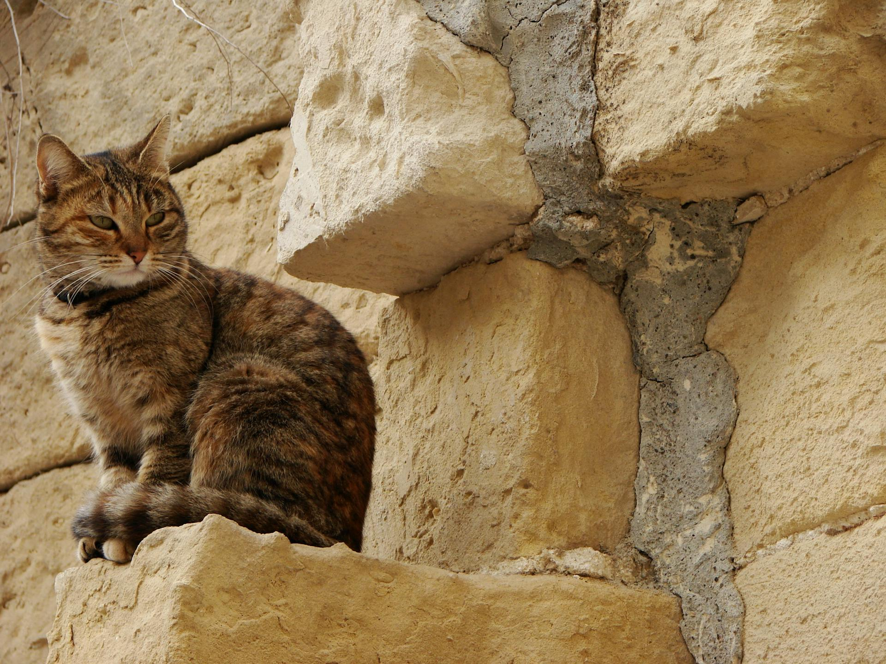
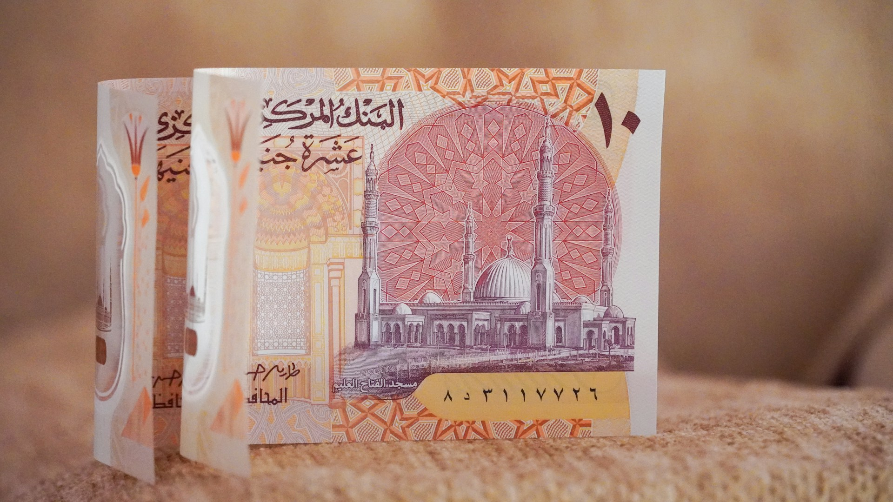

Curiosidades do Egito Antigo
- Adoração Felina: Os gatos eram considerados seres mágicos e sagrados. Matar um gato, mesmo que acidentalmente, era um crime punido com a morte.
- Faraós e Saúde: Diferente das pinturas que os mostram magros, estudos em múmias revelam que muitos faraós eram obesos e sofriam de diabetes devido a uma dieta rica em pão, mel e cerveja.
- Preto: Representa o fim da opressão do povo egípcio e das trevas do período colonial.
- Invenções: Os egípcios foram pioneiros no uso do papiro (precursor do papel) e já usavam vestidos de algodão e joias sofisticadas há mais de 5 mil anos.

Dados Gerais
- Moeda: Libra Egípcia (EGP), localmente chamada de Geneih.
- Idioma: O idioma oficial é o Árabe Moderno, mas o dialeto falado no dia a dia é o Árabe Egípcio.
- Religião: A maioria da população é muçulmana sunita, com uma minoria cristã copta que representa cerca de 10% do povo.

A Bandeira do Egito
A bandeira atual, adotada em 1984, é composta por três faixas horizontais de cores que carregam um forte simbolismo histórico:
- Vermelho: Representa o sangue derramado pelos heróis na luta pela independência e contra o colonialismo.
- Branco: Simboliza a pureza e a transição pacífica da Revolução de 1952, que pôs fim à monarquia sem derramamento de sangue.
- Preto: Representa o fim da opressão do povo egípcio e das trevas do período colonial.
- Águia de Saladino: No centro, a águia dourada é um símbolo de força, soberania e orgulho nacional, em homenagem ao sultão Saladino, que unificou a região no século XII.
Curiosidades do Egito Atual
- Semana de Trabalho: O domingo é um dia útil normal. O final de semana oficial ocorre às sextas e sábados, sendo a sexta-feira o dia de descanso religioso mais importante.
- Nova Capital: O país está construindo uma nova capital administrativa (ainda sem nome oficial) para desafogar o Cairo, que hoje possui pouquíssimos semáforos para uma metrópole de seu tamanho.
- Preto: Representa o fim da opressão do povo egípcio e das trevas do período colonial.
- Regras Sociais: Demonstrações públicas de afeto, como beijos e abraços, não são bem vistas e são praticamente inexistentes na TV local